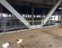

2026年
問題94 建築の構造計画と構造設計に関する次の記述のうち，最も不適当なものはどれか．
(1)各階の柱・壁は，上下階がなるべく同一位置になるように配置する．
(2)筋かい（ブレース）は，主に地震力や風圧力に抵抗する．
(3)構造設計では，構造計画に基づき骨組の形式や構造材料を選択する．
(4)許容応力度は，建築物に作用する荷重に対して部材の安全性を確保するために定められた．
(5)免震構造においては，一般に建物の揺れを制御・低減するためのダンパに座屈拘束ブレースなどが用いられる．
2026年
問題94 正解（5） 頻出度AAA
ダンパに座屈拘束ブレースなどを用いるのは制振構造である（2026-94-1表，2026-94-1図参照）．
2026-94-1表 耐震構造，免震構造，制振構造
| 耐震構造 | 免震構造 | 制振構造 | |
| パッシブコントロール | アクティブコントロール | ||
| 建物を地震に耐えられるだけ頑丈に作る． | 地盤と建物の間に免振装置を挿入し，上階に伝わる振動を小さくする． | 建物各階各所にエネルギーを吸収する制振ダンパーを配置し，建物の振動を低減する． | 建物の屋上に錘おもり（装置）を設置し，錘が建物の振動を低減させる方向に動作し，建物の振動を低減する． |
| 柱や梁を太くし，つなぎ目を頑丈にした構造 | 各種積層ゴム（アイソレータ）＋オイルダンパー | オイルダンパー，座屈拘束ブレース | アクティブ制振装置 |
2026-94-1図 座屈拘束ブレース

出典 戸田建設
https://www.toda.co.jp/tech/construction/to-brb.html
通常の鉄骨ブレースは圧縮力に弱くすぐ座屈（圧縮力に負けて横にはらみ出す現象）してしまうが，「座屈拘束ブレース」は圧縮時も引張時と同等の高い耐性をもち，地震時の建物の揺れをダンパーのように吸収するため，建物の損傷を大幅に軽減できる．
座屈拘束ブレースの構造は，中心にある鋼製の「芯材」の周囲を，モルタルや鋼管などの「拘束材」で覆った二重構造で，さらに芯材と拘束材の間には隙間や緩衝材（アンボンド材）が設けられており，圧縮力がかかっても芯材だけが軸方向に伸縮し，拘束材に軸力が伝わらないよう工夫されている．
-(1) 柱や壁の位置が上下階でずれていると，その間の梁に大きな曲げモーメントやせん断力が集中し，構造的な弱点になる．建築物の構造計画において，各階の柱や耐力壁は上下階で位置を揃える（通す）ことが基本で，建物の自重（固定荷重）や積載荷重などの鉛直荷重，および地震や風による水平力を，上階から下階，そして基礎・地盤へと無理なく直接伝えることができる．
-(2) 筋かい（ブレース）は，柱と梁の間に斜めに入れて三角形の構造（トラス構造）を作ることで、地震や台風などによる水平方向の力（地震力や風圧力）を「引張力」または「圧縮力」として負担し，建物の四角形の歪みを抑える．木造では「筋かい」と呼び，木材や鉄筋などが使われ， 鉄骨造などでは「ブレース」と呼び，形鋼や鋼棒などが使われる．
-(3) 建築物の構造設計は，一般的に以下の流れで進めらる．
1. 構造計画：建物の用途・規模・敷地条件・経済性などを踏まえ、全体の構造方針を立てる．
2. 構造計算・設計：構造計画に基づき，具体的な骨組の形式（ラーメン構造，ブレース構造，壁式構造など）や構造材料（鉄骨造，鉄筋コンクリート造，木造など）を選択し、安全性を検証する．
-(4) 許容応力度：建築物の部材が，荷重や反力（外力）によって発生するよる内部応力に負けないように，許容される応力度（単位断面積あたりの応力）が，部材の種類や部位ごとに建築基準法・同施行令に定められている（施行令第89条〜）．